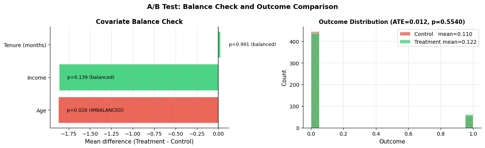
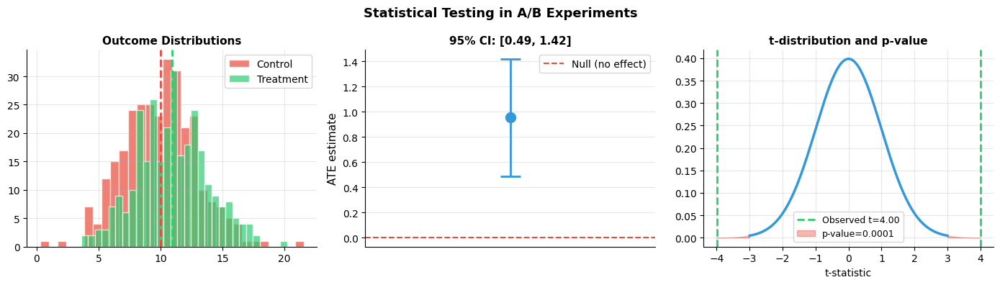
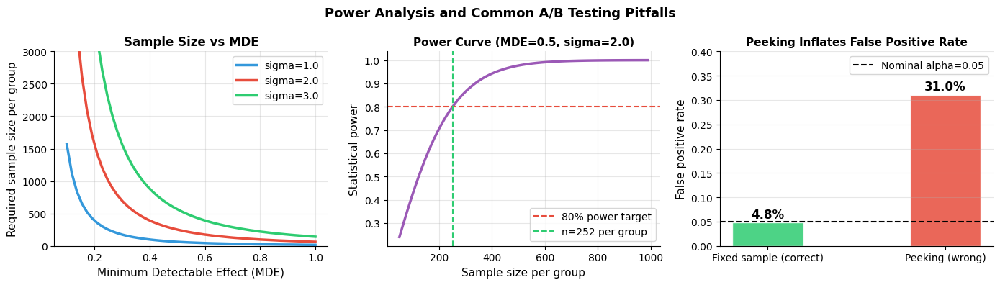

How do you design and analyze experiments?#
Topics: A/B Testing · Randomization · ATE Estimation · t-tests · p-values · Power Analysis · Common Pitfalls
1. A/B Testing & Randomization#
What it is#
Gold standard for causal inference — randomization eliminates confounding by design
Randomly assign units to treatment (A) or control (B)
Compare outcomes between groups — difference estimates ATE
Key intuition#
Randomization balances ALL covariates (observed and unobserved) in expectation
No need to adjust for confounders — they are equally distributed across groups
The only systematic difference between groups is the treatment itself
Assumptions#
Random assignment — treatment is assigned by chance, not based on unit characteristics
SUTVA — no interference between units
No spillover — treatment group does not affect control group
Stable experiment conditions — no external events change outcomes mid-experiment
No peeking — stopping rule decided before experiment, not after seeing results
Validation#
Balance check — compare covariate means between treatment and control
A/A test — run experiment with no real treatment, verify no significant difference
Randomization check — verify assignment was truly random (check assignment mechanism)
If violated#
Random assignment violated → use observational methods (Files 3-4)
Spillover → cluster randomization, network-aware design
Peeking → sequential testing, alpha spending functions
import numpy as np
import matplotlib.pyplot as plt
from scipy import stats
np.random.seed(42)
n_per_group = 500
# True effect: treatment increases conversion by 3 percentage points
p_control = 0.10
p_treatment = 0.13
true_ate = p_treatment - p_control
control = np.random.binomial(1, p_control, n_per_group)
treatment = np.random.binomial(1, p_treatment, n_per_group)
ate_est = treatment.mean() - control.mean()
t_stat, p_val = stats.ttest_ind(treatment, control)
print(f"True ATE : {true_ate:.3f}")
print(f"Estimated ATE : {ate_est:.3f}")
print(f"t-statistic : {t_stat:.3f}")
print(f"p-value : {p_val:.4f}")
print(f"Significant : {p_val < 0.05}")
# Balance check — compare covariate means
np.random.seed(42)
age = np.random.randint(18, 65, n_per_group*2)
income = np.random.randn(n_per_group*2) * 20 + 50
tenure = np.random.randint(1, 120, n_per_group*2)
T = np.random.binomial(1, 0.5, n_per_group*2)
covariates = {'Age': age, 'Income': income, 'Tenure (months)': tenure}
fig, axes = plt.subplots(1, 2, figsize=(13, 4))
# Balance check plot
names, diffs, p_vals = [], [], []
for name, cov in covariates.items():
diff = cov[T==1].mean() - cov[T==0].mean()
_, p = stats.ttest_ind(cov[T==1], cov[T==0])
names.append(name); diffs.append(diff); p_vals.append(p)
colors = ['#2ECC71' if p > 0.05 else '#E74C3C' for p in p_vals]
bars = axes[0].barh(names, diffs, color=colors, alpha=0.85, edgecolor='white')
axes[0].axvline(0, color='black', linewidth=1)
axes[0].set_xlabel('Mean difference (Treatment - Control)', fontsize=11)
axes[0].set_title('Covariate Balance Check', fontsize=12, fontweight='bold')
axes[0].grid(True, alpha=0.3, axis='x')
axes[0].spines['top'].set_visible(False); axes[0].spines['right'].set_visible(False)
for bar, p in zip(bars, p_vals):
status = 'balanced' if p > 0.05 else 'IMBALANCED'
axes[0].text(bar.get_width() + 0.1, bar.get_y() + bar.get_height()/2,
f'p={p:.3f} ({status})', va='center', fontsize=9)
# Outcome distribution
axes[1].hist(control, bins=20, alpha=0.7, color='#E74C3C', label=f'Control mean={control.mean():.3f}', edgecolor='white')
axes[1].hist(treatment, bins=20, alpha=0.7, color='#2ECC71', label=f'Treatment mean={treatment.mean():.3f}', edgecolor='white')
axes[1].set_xlabel('Outcome', fontsize=11); axes[1].set_ylabel('Count', fontsize=11)
axes[1].set_title(f'Outcome Distribution (ATE={ate_est:.3f}, p={p_val:.4f})', fontsize=11, fontweight='bold')
axes[1].legend(fontsize=10); axes[1].grid(True, alpha=0.3)
axes[1].spines['top'].set_visible(False); axes[1].spines['right'].set_visible(False)
plt.suptitle('A/B Test: Balance Check and Outcome Comparison', fontsize=13, fontweight='bold')
plt.tight_layout()
plt.savefig('ab_test.png', dpi=120, bbox_inches='tight')
plt.show()
True ATE : 0.030
Estimated ATE : 0.012
t-statistic : 0.592
p-value : 0.5540
Significant : False

2. Statistical Testing: t-test, p-values, Confidence Intervals#
What it is#
t-test — tests whether the difference in means between two groups is statistically significant
p-value — probability of observing this result (or more extreme) if there is no true effect
Confidence interval — range that contains the true effect with 95% probability across repeated experiments
Key intuition#
p < 0.05 does NOT mean the effect is large or practically meaningful
p > 0.05 does NOT mean there is no effect — you may just be underpowered
Always report effect size AND confidence interval, not just p-value
Assumptions#
Observations are independent
Outcome is approximately normally distributed (or large sample size by CLT)
Equal or known variance between groups
Validation#
Check independence — users in same household, same network are not independent
Check normality — QQ plot, Shapiro-Wilk test (for small samples)
If violated#
Non-normal, small sample → Mann-Whitney U test (non-parametric)
Non-independent observations → cluster-robust standard errors
Multiple outcomes tested → Bonferroni correction, Benjamini-Hochberg FDR
import numpy as np
import matplotlib.pyplot as plt
from scipy import stats
np.random.seed(42)
# Simulate A/B test results
n = 300
ctrl = np.random.normal(10, 3, n)
trt = np.random.normal(11, 3, n) # true effect = 1
t_stat, p_val = stats.ttest_ind(trt, ctrl)
diff = trt.mean() - ctrl.mean()
se = np.sqrt(ctrl.std()**2/n + trt.std()**2/n)
ci_low = diff - 1.96 * se
ci_hi = diff + 1.96 * se
print(f"Treatment mean : {trt.mean():.3f}")
print(f"Control mean : {ctrl.mean():.3f}")
print(f"ATE estimate : {diff:.3f}")
print(f"95% CI : [{ci_low:.3f}, {ci_hi:.3f}]")
print(f"t-statistic : {t_stat:.3f}")
print(f"p-value : {p_val:.4f}")
fig, axes = plt.subplots(1, 3, figsize=(14, 4))
# Distribution
axes[0].hist(ctrl, bins=30, alpha=0.7, color='#E74C3C', label='Control', edgecolor='white')
axes[0].hist(trt, bins=30, alpha=0.7, color='#2ECC71', label='Treatment', edgecolor='white')
axes[0].axvline(ctrl.mean(), color='#E74C3C', linewidth=2, linestyle='--')
axes[0].axvline(trt.mean(), color='#2ECC71', linewidth=2, linestyle='--')
axes[0].set_title('Outcome Distributions', fontsize=11, fontweight='bold')
axes[0].legend(fontsize=10); axes[0].grid(True, alpha=0.3)
axes[0].spines['top'].set_visible(False); axes[0].spines['right'].set_visible(False)
# Confidence interval
axes[1].errorbar([1], [diff], yerr=[[diff-ci_low], [ci_hi-diff]],
fmt='o', color='#3498DB', capsize=10, capthick=2, markersize=10, linewidth=2)
axes[1].axhline(0, color='#E74C3C', linewidth=1.5, linestyle='--', label='Null (no effect)')
axes[1].set_xlim(0, 2); axes[1].set_xticks([])
axes[1].set_ylabel('ATE estimate', fontsize=11)
axes[1].set_title(f'95% CI: [{ci_low:.2f}, {ci_hi:.2f}]', fontsize=11, fontweight='bold')
axes[1].legend(fontsize=10); axes[1].grid(True, alpha=0.3, axis='y')
axes[1].spines['top'].set_visible(False); axes[1].spines['right'].set_visible(False)
# p-value interpretation
effect_sizes = np.linspace(-3, 3, 300)
t_dist = stats.t(df=2*n-2)
axes[2].plot(effect_sizes, t_dist.pdf(effect_sizes), color='#3498DB', linewidth=2.5)
axes[2].axvline(t_stat, color='#2ECC71', linewidth=2, linestyle='--', label=f'Observed t={t_stat:.2f}')
axes[2].axvline(-t_stat, color='#2ECC71', linewidth=2, linestyle='--')
x_tail_r = np.linspace(t_stat, 3, 100)
x_tail_l = np.linspace(-3, -t_stat, 100)
axes[2].fill_between(x_tail_r, t_dist.pdf(x_tail_r), alpha=0.4, color='#E74C3C', label=f'p-value={p_val:.4f}')
axes[2].fill_between(x_tail_l, t_dist.pdf(x_tail_l), alpha=0.4, color='#E74C3C')
axes[2].set_title('t-distribution and p-value', fontsize=11, fontweight='bold')
axes[2].set_xlabel('t-statistic'); axes[2].legend(fontsize=9)
axes[2].grid(True, alpha=0.3)
axes[2].spines['top'].set_visible(False); axes[2].spines['right'].set_visible(False)
plt.suptitle('Statistical Testing in A/B Experiments', fontsize=13, fontweight='bold')
plt.tight_layout()
plt.savefig('statistical_testing.png', dpi=120, bbox_inches='tight')
plt.show()
Treatment mean : 10.936
Control mean : 9.983
ATE estimate : 0.952
95% CI : [0.486, 1.419]
t-statistic : 3.995
p-value : 0.0001

3. Power Analysis#
What it is#
Statistical power = probability of detecting a real effect when it exists
Power analysis determines the required sample size before running an experiment
Inputs: significance level (α), desired power (1-β), minimum detectable effect (MDE), baseline variance
Key intuition#
Underpowered experiments miss real effects — waste resources and mislead
Overpowered experiments are expensive — more users than needed
The smaller the effect you want to detect, the larger the sample needed
Assumptions#
Effect size is correctly estimated (from pilot data or domain knowledge)
Variance is correctly estimated
Test is two-sided unless there is strong prior reason for one-sided
Validation#
Run A/A test to verify false positive rate matches α
Check actual variance matches assumed variance
If violated#
Variance underestimated → collect more data or use variance reduction (CUPED)
Effect smaller than expected → extend experiment duration
Common pitfalls#
Peeking — stopping experiment early when p < 0.05 inflates false positive rate
Multiple testing — testing 20 metrics gives 1 false positive by chance at α=0.05
Novelty effect — users behave differently due to newness, not the actual change
Network effects — treated users influence control users, biasing estimate
import numpy as np
import matplotlib.pyplot as plt
from scipy import stats
def required_sample_size(mde, sigma, alpha=0.05, power=0.8):
z_alpha = stats.norm.ppf(1 - alpha/2)
z_beta = stats.norm.ppf(power)
return int(np.ceil(2 * ((z_alpha + z_beta) * sigma / mde)**2))
# How sample size varies with MDE
sigmas = [1.0, 2.0, 3.0]
mdes = np.linspace(0.1, 1.0, 50)
fig, axes = plt.subplots(1, 3, figsize=(14, 4))
colors = ['#3498DB', '#E74C3C', '#2ECC71']
for sigma, color in zip(sigmas, colors):
sizes = [required_sample_size(m, sigma) for m in mdes]
axes[0].plot(mdes, sizes, color=color, linewidth=2.5, label=f'sigma={sigma}')
axes[0].set_xlabel('Minimum Detectable Effect (MDE)', fontsize=11)
axes[0].set_ylabel('Required sample size per group', fontsize=11)
axes[0].set_title('Sample Size vs MDE', fontsize=12, fontweight='bold')
axes[0].legend(fontsize=10); axes[0].grid(True, alpha=0.3)
axes[0].set_ylim(0, 3000)
axes[0].spines['top'].set_visible(False); axes[0].spines['right'].set_visible(False)
# Power curve
n_vals = np.arange(50, 1000, 10)
sigma = 2.0
mde = 0.5
powers = []
for n in n_vals:
se = sigma * np.sqrt(2/n)
z_crit = stats.norm.ppf(0.975)
power = 1 - stats.norm.cdf(z_crit - mde/se) + stats.norm.cdf(-z_crit - mde/se)
powers.append(power)
axes[1].plot(n_vals, powers, color='#9B59B6', linewidth=2.5)
axes[1].axhline(0.8, color='#E74C3C', linewidth=1.5, linestyle='--', label='80% power target')
n_80 = required_sample_size(mde, sigma)
axes[1].axvline(n_80, color='#2ECC71', linewidth=1.5, linestyle='--', label=f'n={n_80} per group')
axes[1].set_xlabel('Sample size per group', fontsize=11)
axes[1].set_ylabel('Statistical power', fontsize=11)
axes[1].set_title(f'Power Curve (MDE={mde}, sigma={sigma})', fontsize=11, fontweight='bold')
axes[1].legend(fontsize=10); axes[1].grid(True, alpha=0.3)
axes[1].spines['top'].set_visible(False); axes[1].spines['right'].set_visible(False)
# Peeking problem simulation
np.random.seed(42)
n_sims, max_n = 500, 300
false_positives_peek, false_positives_fixed = 0, 0
for _ in range(n_sims):
ctrl_data = np.random.normal(0, 1, max_n)
trt_data = np.random.normal(0, 1, max_n) # null effect
peeked = False
for n in range(10, max_n, 10):
_, p = stats.ttest_ind(trt_data[:n], ctrl_data[:n])
if p < 0.05:
peeked = True
break
if peeked:
false_positives_peek += 1
_, p_final = stats.ttest_ind(trt_data, ctrl_data)
if p_final < 0.05:
false_positives_fixed += 1
peek_rate = false_positives_peek / n_sims
fixed_rate = false_positives_fixed / n_sims
axes[2].bar(['Fixed sample (correct)', 'Peeking (wrong)'], [fixed_rate, peek_rate],
color=['#2ECC71', '#E74C3C'], alpha=0.85, edgecolor='white', width=0.4)
axes[2].axhline(0.05, color='black', linewidth=1.5, linestyle='--', label='Nominal alpha=0.05')
axes[2].set_ylabel('False positive rate', fontsize=11)
axes[2].set_title('Peeking Inflates False Positive Rate', fontsize=11, fontweight='bold')
axes[2].legend(fontsize=10); axes[2].grid(True, alpha=0.3, axis='y')
axes[2].set_ylim(0, 0.4)
axes[2].spines['top'].set_visible(False); axes[2].spines['right'].set_visible(False)
for i, val in enumerate([fixed_rate, peek_rate]):
axes[2].text(i, val+0.01, f'{val:.1%}', ha='center', fontsize=12, fontweight='bold')
plt.suptitle('Power Analysis and Common A/B Testing Pitfalls', fontsize=13, fontweight='bold')
plt.tight_layout()
plt.savefig('power_analysis.png', dpi=120, bbox_inches='tight')
plt.show()
print(f"Required n per group (MDE={mde}, sigma={sigma}, power=80%): {n_80}")
print(f"Fixed sample false positive rate : {fixed_rate:.1%} (expected ~5%)")
print(f"Peeking false positive rate : {peek_rate:.1%} (inflated!)")

Required n per group (MDE=0.5, sigma=2.0, power=80%): 252
Fixed sample false positive rate : 4.8% (expected ~5%)
Peeking false positive rate : 31.0% (inflated!)
Interview Q&A#
What is the difference between statistical significance and practical significance?
Statistical significance: p < 0.05 — effect is unlikely due to chance
Practical significance: effect size is large enough to matter in business terms
A tiny effect (e.g. +0.001% conversion) can be statistically significant with large n
How do you handle multiple testing in A/B experiments?
Bonferroni correction: divide alpha by number of tests (conservative)
Benjamini-Hochberg FDR: controls false discovery rate (less conservative, preferred)
Pre-register which metrics are primary — only apply correction to primary metrics
What is CUPED?
Controlled-experiment Using Pre-Experiment Data — variance reduction technique
Uses pre-experiment covariate to reduce outcome variance → smaller required sample size
Y_adjusted = Y - theta * (X - E[X])where theta is estimated from pre-period data
Gotchas#
Always determine sample size BEFORE running the experiment
Never change the stopping criteria mid-experiment
Run experiments for full weeks — day-of-week effects are common
Segment analysis post-hoc requires multiple testing correction